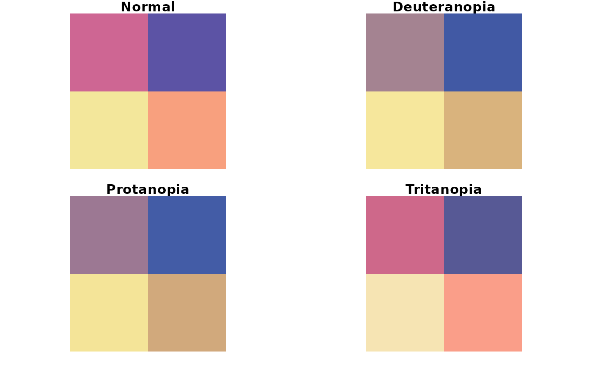

Comparision of the original input palette and simulations of color vision deficiencies - deuteranopia, protanopia, and tritanopia.
palette_check(
x,
tolerance = NULL,
plot = FALSE,
bivariate = FALSE,
severity = 1,
...
)A vector of hexadecimal color descriptions
The minimal value of acceptable difference between the colors to distinguish between them. As the default, minimal distance between colors in the original input palette is given.
If TRUE, display a plot comparing the original input palette and simulations of color vision deficiencies - deuteranopia, protanopia, and tritanopia
If TRUE (and plot = TRUE), display a bivariate plot (plot where colors are located in columns and rows) comparing the original input palette and simulations of color vision deficiencies - deuteranopia, protanopia, and tritanopia
Severity of the color vision defect, a number between 0 and 1
Other arguments passed on to palette_dist() to control the color metric
A data.frame with 4 observations and 8 variables:
name: orginal input color palette (normal), deuteranopia, protanopia, and tritanopia
n: number of colors
tolerance: minimal value of acceptable difference between the colors to distinguish between them
ncp: number of color pairs
ndcp: number of differentiable color pairs (color pairs with distances above the tolerance value)
min_dist: minimal distance between colors
mean_dist: average distance between colors
max_dist: maximal distance between colors
Additionally, a plot comparing the original input palette and simulations of color vision deficiencies - deuteranopia, protanopia, and tritanopia can be shown.
rainbow_pal = rainbow(n = 7)
rainbow_pal
#> [1] "#FF0000" "#FFDB00" "#49FF00" "#00FF92" "#0092FF" "#4900FF" "#FF00DB"
palette_check(rainbow_pal, plot = TRUE)
#> name n tolerance ncp ndcp min_dist mean_dist max_dist
#> 1 normal 7 12.13226 21 21 12.132257 61.06471 107.63470
#> 2 deuteranopia 7 12.13226 21 19 2.572062 44.29065 85.87461
#> 3 protanopia 7 12.13226 21 17 3.647681 47.63882 83.28286
#> 4 tritanopia 7 12.13226 21 20 2.025647 47.41585 83.77189
x = rcartocolor::carto_pal(11, "Vivid")
palette_check(x)
#> name n tolerance ncp ndcp min_dist mean_dist max_dist
#> 1 normal 11 12.84607 55 55 12.846069 40.02555 77.24506
#> 2 deuteranopia 11 12.84607 55 44 3.746439 29.90801 60.27005
#> 3 protanopia 11 12.84607 55 46 2.760351 30.25902 63.13637
#> 4 tritanopia 11 12.84607 55 47 6.571998 34.97722 70.26305
palette_check(x, plot = TRUE)
#> name n tolerance ncp ndcp min_dist mean_dist max_dist
#> 1 normal 11 12.84607 55 55 12.846069 40.02555 77.24506
#> 2 deuteranopia 11 12.84607 55 44 3.746439 29.90801 60.27005
#> 3 protanopia 11 12.84607 55 46 2.760351 30.25902 63.13637
#> 4 tritanopia 11 12.84607 55 47 6.571998 34.97722 70.26305
palette_check(x, tolerance = 1)
#> name n tolerance ncp ndcp min_dist mean_dist max_dist
#> 1 normal 11 1 55 55 12.846069 40.02555 77.24506
#> 2 deuteranopia 11 1 55 55 3.746439 29.90801 60.27005
#> 3 protanopia 11 1 55 55 2.760351 30.25902 63.13637
#> 4 tritanopia 11 1 55 55 6.571998 34.97722 70.26305
palette_check(x, tolerance = 10, metric = 1976)
#> name n tolerance ncp ndcp min_dist mean_dist max_dist
#> 1 normal 11 10 55 55 12.846069 40.02555 77.24506
#> 2 deuteranopia 11 10 55 51 4.993172 53.81809 112.91085
#> 3 protanopia 11 10 55 50 3.518865 54.47734 115.19857
#> 4 tritanopia 11 10 55 55 13.292920 52.88886 115.96152
palette_check(x, plot = TRUE, severity = 0.5)
#> name n tolerance ncp ndcp min_dist mean_dist max_dist
#> 1 normal 11 12.84607 55 55 12.846069 40.02555 77.24506
#> 2 deuteranopia 11 12.84607 55 50 6.103704 32.82212 64.36700
#> 3 protanopia 11 12.84607 55 50 7.784385 33.23662 66.63678
#> 4 tritanopia 11 12.84607 55 54 12.257169 36.58599 64.40300
y = rcartocolor::carto_pal(4, "Sunset")
palette_check(y, plot = TRUE, bivariate = TRUE, severity = 0.5)

#> name n tolerance ncp ndcp min_dist mean_dist max_dist
#> 1 normal 4 28.27696 6 6 28.27696 42.88452 67.75598
#> 2 deuteranopia 4 28.27696 6 5 14.45979 39.20407 65.55729
#> 3 protanopia 4 28.27696 6 4 17.35196 39.44005 64.27717
#> 4 tritanopia 4 28.27696 6 4 22.10219 37.92613 58.17007